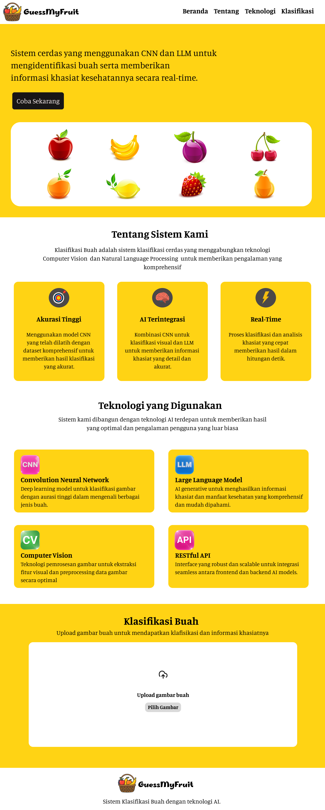

Merancang UI GuessMyFruit, sebuah sistem klasifikasi buah berbasis web yang menggunakan CNN dan LLM. Desain antarmuka dirancang dengan tampilan yang bersih dan ramah pengguna, mencakup halaman beranda, informasi teknologi, serta halaman klasifikasi untuk upload gambar buah dan menampilkan hasil identifikasi beserta informasi khasiat kesehatannya secara real-time.